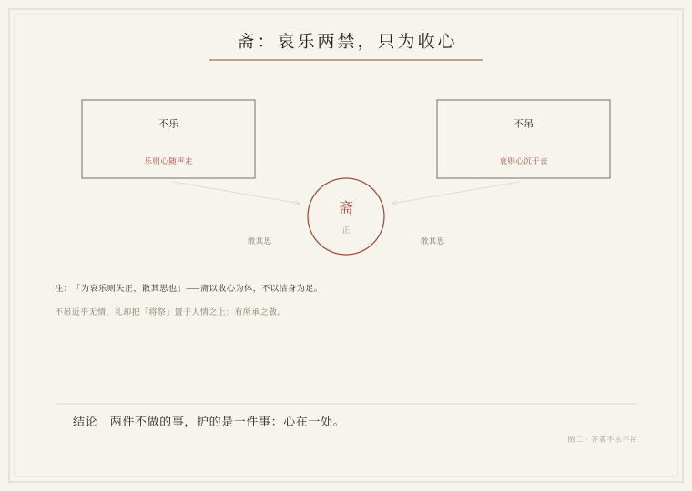

曲礼上 · 一·一百 · 第 98 课
斋戒之人不奏乐、不吊丧。注说：哀乐皆能失正、散其思。
说什么事：齐者不乐不吊。
落在哪一层：礼意，兼及仪。斋之收心，见于两件不做的事。
为何编在此位：上节言祭中之尸，此节言祭前之斋。由祭之时入祭之前。
【经】齊者不樂不弔。
【注】為哀樂則失正，散其思也。
齐 《释文》「齐，侧皆反」，即斋。致斋、散斋之别，见《祭统》。
不乐 不作乐。乐，音乐燕乐。
不吊 不往吊丧。
失正 注。斋以正为要，哀乐皆能摇之。
散其思 注。思，思虑；斋时思虑当专一。
斋戒的人不奏乐，不吊丧。
一节六字，讲斋的两条禁令。斋不是不吃不喝，是把心收到一处；乐与哀，一个向外放，一个向内沉，都能把这份专注打散。故斋者两样都不做。
第一层 斋以正为体 注「失正」。斋要的是心正，不是身洁。
第二层 乐散其思 乐起则心随声走，思不能专。
第三层 吊亦散其思 吊丧是哀，哀一起，心就沉在别人的丧里。斋者为将祭而斋，不能分心。
第四层 两禁之等 不乐易解，不吊难解——不吊近乎无情。礼在这里把「将祭」置于人情之上，是有所承之敬。
与今日何干 大事前一日不赴宴、不参加红白事，先把心收住。此节之今形，在考前的静。
| 左 | 右 |
|---|---|
| 齐 | 斋戒，将祭而斋 |
| 不乐 | 不作乐，乐则思散 |
| 不吊 | 不往吊丧，哀亦散思 |
| 失正 | 哀乐皆能摇其正 |
| 散其思 | 心不专一 |
| 两禁一理 | 把心收到一处 |
画室内二物：一张琴以布覆之、弦松；门内侧立一支素色旒幡（吊丧所用之旗）却收拢未张、倚在墙边。室内只一盏灯、一地席，别无一物。不画人、不写文字。赭色只在灯座。
